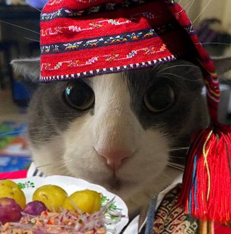

Conoce a peruanisti
¿Quién es peruanisti?
Lucrecia es mi mascota y una gran compañera. Es un gato de raza peruana que actualmente tiene 3 años de edad.
Características fisicas
- Raza: gato
- Edad: 3 años
- Color: negro con una mancha negra en el ojo derecho
- Tamaño: Mediano
- Peso aproximado: 22 kilogramos
- hace videollamadas: quien sabe porque
Personalidad
peruanisti es muy activa, le encanta jugar con pelotas y correr en el parque. Tiene una personalidad rara, es sociable con las personas y otros animales vendio frunas y siempre está moviendo la cola cuando está feliz.
Hábitos y cuidados del peruanisti
- Come dos veces al día: en la mañana y en la noche.
- Su comida favorita es el picante
- Sale a vender todos los días a las 7 a.m. y a las 6 p.m.
- tiene que dormir en su cama cerca de la ventana.
- Va al vecino cada tres meses para que le compre.
Momentos divertidos con peruanisti
Un día, hico una videollamada para contactar a su casero y la vimos y nos dio risa porque no sabia manejar el celular
¿Quieres saber más sobre su raza?
Puedes aprender más sobre los peruanisti visitando esta página:
Información sobre los peruanistis
Otros enlaces útiles
Si deseas buscar más información general, visita
Google.
¡Aquí está peruanitis! ta insana

video insano ._.